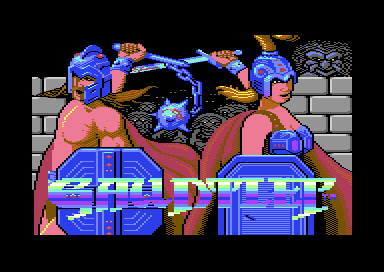
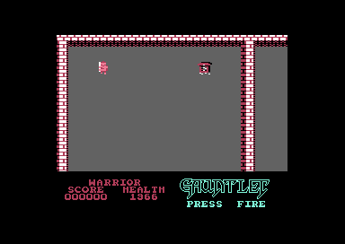

<meta charset="utf-8">
<meta name="viewport" content="width=device-width, initial-scale=1">
<title>Gauntlet</title>
<link rel="preconnect" href="https://fonts.googleapis.com">
<link rel="stylesheet" href="https://fonts.googleapis.com/css2?family=Lato:wght@400;700;900&family=IBM+Plex+Mono:wght@400;500&display=swap">
<style>
:root{
  --bg:#23262d; --paper:#e9e7e1; --surface:#ffffff; --surface-2:#f1efea; --line:#d5d3cc; --line-soft:#e0ded8;
  --ink:#2f3136; --ink-soft:#55585f; --ink-mute:#80838a;
  --link:#1f5fa8; --link-hover:#154480; --accent:#1f5fa8;
  --amber:#c25a00; --cyan:#1f5fa8; --coral:#d04a3a; --green:#2a8a4a; --violet:#4a5bd6; --hl:#fff0c2;
  --chip:#2f3136; --chip-ink:#ffffff;
  --c64blue:#40318d; --c64grey:#686868;
  --fd:'Lato',system-ui,sans-serif; --fb:'Lato',system-ui,sans-serif; --fm:'IBM Plex Mono',ui-monospace,Menlo,monospace;
  --col:1080px; --gx:68px; --fs:17px; --lh:1.6; --hw:900; --h1:46px; --h2:26px; --sy:48px; --pp:26px; --r:10px;
  --plate-shadow:0 1px 2px rgba(0,0,0,.05),0 4px 14px rgba(0,0,0,.05);
}
*{box-sizing:border-box}
html{background:var(--bg);min-height:100%}
body{background:var(--paper);color:var(--ink);font-family:var(--fb);font-size:var(--fs);line-height:var(--lh);max-width:var(--col);margin:0 auto;min-height:100vh;padding:0 0 4rem}
h1,h2,h3{font-weight:var(--hw);letter-spacing:-.01em;text-wrap:balance;color:var(--ink);margin:0}
.wrap{padding:0 var(--gx)}
.hero{padding:48px var(--gx) 8px;text-align:left}
.eyebrow{font-family:var(--fm);font-size:12px;letter-spacing:.08em;text-transform:uppercase;color:var(--ink-mute);margin:0 0 10px}
.hero h1{font-size:var(--h1);line-height:1.15;letter-spacing:-.02em;margin:0 0 14px}
.hero .sub{margin:0 0 .6em;color:var(--ink-soft)}
section{padding:var(--sy) 0 24px}
section:last-of-type{border-bottom:none}
.fig{font-family:var(--fm);font-size:12px;letter-spacing:.08em;text-transform:uppercase;color:var(--ink-mute);margin:0 0 10px}
h2.t{font-size:var(--h2);margin-bottom:12px}
.lede{color:var(--ink-soft);margin:0 0 30px}
.plate{background:var(--surface);border:1px solid var(--line);border-radius:var(--r);padding:var(--pp);box-shadow:var(--plate-shadow)}
.cap{font-size:14px;color:var(--ink-mute);margin-top:14px;line-height:1.55}
.cap b{color:var(--ink);font-weight:700}
code{font-family:var(--fm);font-size:.82em;background:var(--chip);color:var(--chip-ink);border-radius:4px;padding:2px 6px;white-space:nowrap}
.gx-pair{display:flex;gap:18px;flex-wrap:wrap}
.gx-pair figure{margin:0;flex:1 1 280px}
.gx-pair img{width:100%;image-rendering:pixelated;border-radius:4px;display:block}
.gx-pair figcaption{font-size:14px;color:var(--ink-mute);margin-top:6px}
.gx-cv{width:100%;max-width:768px;image-rendering:pixelated;display:block;background:#000;border-radius:4px}
.gx-ctl{display:flex;gap:10px;flex-wrap:wrap;align-items:center;margin:0 0 14px;font-size:15px}
.gx-ctl button,.gx-ctl select{font:inherit;font-size:14px;padding:5px 12px;border:1px solid var(--line);border-radius:6px;background:var(--surface-2);cursor:pointer;color:var(--ink)}
.gx-ctl button[aria-pressed=true]{background:var(--ink);color:#fff;border-color:var(--ink)}
.gx-ctl input[type=number]{font:inherit;width:7em;padding:4px 8px;border:1px solid var(--line);border-radius:6px}
.gx-tab{border-collapse:collapse;width:100%;font-size:14px}
.gx-tab th,.gx-tab td{border-bottom:1px solid var(--line-soft);padding:6px 8px;text-align:left;vertical-align:top}
.gx-tab th{font-weight:700;color:var(--ink-soft)}
.gx-scroll{overflow-x:auto}
.gx-miss{font-size:14px;color:var(--coral)}
.gx-mon{display:flex;gap:14px;flex-wrap:wrap}
.gx-mon figure{margin:0;text-align:center;font-size:13px;color:var(--ink-soft)}
.gx-mon canvas{width:96px;height:96px;image-rendering:pixelated;background:#000;border-radius:4px;display:block}
.gx-fnow{display:flex;gap:22px;flex-wrap:wrap;align-items:flex-start;margin-top:22px}
.gx-fnow canvas{flex:2 1 300px;max-width:542px;width:100%}
.gx-fnow .gx-fside{flex:1 1 200px;min-width:0;font-size:15px;color:var(--ink-soft)}
.gx-fonts{display:flex;gap:16px;flex-wrap:wrap}
.gx-fonts figure{margin:0;flex:1 1 220px;max-width:320px;font-size:14px;color:var(--ink-soft)}
.gx-sheet{width:100%;image-rendering:pixelated;display:block;border-radius:4px;border:3px solid transparent;box-sizing:border-box;background:#2f3136}
.gx-sheet.gx-on{border-color:#f2c94c}
.gx-out{font-family:var(--fm);font-size:15px;line-height:1.8}
.gx-out b{font-size:17px}
.gx-panel{width:192px;height:32px;image-rendering:pixelated;background:#000;border-radius:4px;vertical-align:middle}
.gx-time{display:flex;border-radius:6px;overflow:hidden;font-size:13px;margin:6px 0 4px}
.gx-time div{padding:8px 10px;color:#fff}
.gx-chase{display:flex;gap:22px;flex-wrap:wrap;align-items:flex-start}
.gx-ch-map{flex:2 1 360px;max-width:560px;width:100%;image-rendering:pixelated;background:#000;border-radius:4px;display:block;cursor:crosshair}
.gx-ch-side{flex:1 1 200px;min-width:0;font-size:15px}
.gx-ch-side dl{margin:0;display:grid;grid-template-columns:auto 1fr;gap:4px 12px}
.gx-ch-side dt{color:var(--ink-mute)}
.gx-ch-side dd{margin:0;font-family:var(--fm);font-size:14px}
.gx-ch-k{font-size:14px;color:var(--ink-soft);margin:16px 0 6px}
.gx-ch-slots{width:100%;height:40px;display:block}
.gx-key{display:flex;gap:16px;flex-wrap:wrap;font-size:14px;color:var(--ink-soft);margin-top:10px}
.gx-key i{display:inline-block;width:12px;height:12px;border-radius:2px;margin-right:6px;vertical-align:-1px}
</style>
<!-- tabs -->
<header class="hero">
  <p class="eyebrow">1986 · U.S. Gold</p>
  <h1>Gauntlet</h1>
  <p class="sub">The arcade hit squeezed into 64 KB, where every monster on screen is a set of letters in a font, and the game keeps armour values for its heroes that it never reads. Eat poison with under 100 health and you can wander the dungeon for hours.</p>
</header>
<main class="wrap">

<section>
  <p class="fig">01 · The game</p>
  <h2 class="t">Four heroes, endless dungeons</h2>
  <p class="lede">One or two players each pick a hero and fight down through a scrolling maze, level after level, until their health runs out.</p>
  <div class="gx-pair">
    <figure><figcaption>The title screen.</figcaption></figure>
    <figure><figcaption>Level 1: the Warrior at the top left, a key to the right, the status panel below.</figcaption></figure>
  </div>
  <p>The heroes are Thor the Warrior, Thyra the Valkyrie, Questor the Elf, and Merlin the Wizard. Each level is a maze of walls and doors, seen through a window that scrolls with the players. Generators pour out ghosts, grunts, demons, lobbers, and sorcerers, and Death walks among them. Health starts at 2000 and drains by one point every 64 frames whatever you do, so the food lying in the maze matters as much as the fighting.</p>
  <p>Keys open doors, potions blow up every monster on screen, and treasure scores points. Each level ends at an exit, a whirlpool in the floor. A second player can join at any moment by pressing fire.</p>
</section>

<section>
  <p class="fig">02 · One frame, rebuilt from memory</p>
  <h2 class="t">Characters for the maze and its monsters, sprites for the heroes</h2>
  <p class="lede">The picture below is drawn by this page from the game's memory and the video chip's registers, as the emulator recorded them for one frame of level 2.</p>
  <div class="plate">
    <div class="gx-ctl"><button type="button" id="gx-spr" aria-pressed="true">Sprites on</button></div>
    <canvas id="gx-frame" class="gx-cv"></canvas>
    <p class="cap"><b>Level 2, both players in.</b> Drawn by the site's renderer from the frame <code>kit/c64/frame.py</code> recorded: all 104,448 pixels match the emulator's own picture of the same frame. Switch the sprites off and only the heroes and their two-sprite black masks at the play area's edges go: the walls, the generator, and the field of ghosts are all characters.</p>
  </div>
  <p>The maze is a grid of 32 by 32 tiles at <code>$0C00</code>, each tile 2 by 2 characters. The game draws the grid into a character map of 64 by 64 at <code>$3000</code> and a colour map at <code>$2000</code>, then copies the 33 by 20 window the players can see into whichever of its two screens is hidden, and swaps (maze_draw at <code>$8A0B</code>). Scrolling moves the window 2 pixels a step with the video chip's fine scroll and redraws on each whole character.</p>
  <p>Monsters are drawn into the same maps as four characters each (monster_draw, <code>$CA7F</code>). The character map is also the collision map: a player's four cells hold <code>$5B</code>, a character that looks like floor, and anything above <code>$5A</code> blocks the way (cells_free). The only sprites are the two heroes, the shots, the level number's digits, and two black masks that cover the columns the scroll brings in at each side.</p>
</section>

<section>
  <p class="fig">03 · The monsters</p>
  <h2 class="t">Three fonts animate every monster at once</h2>
  <p class="lede">The game has three copies of its maze font. They share the walls, the floor and most of the treasure, and differ in the monsters, the transporter, the trap and the treasure chest. Changing font is how all of them move.</p>
  <div class="plate">
    <div class="gx-ctl"><button type="button" id="gx-anim" aria-pressed="true">Animating</button><button type="button" id="gx-step">Step</button><label>Facing <select id="gx-face"></select></label><span id="gx-fnt" class="gx-out"></span></div>
    <div class="gx-mon" id="gx-mon"></div>
    <div class="gx-fnow">
      <canvas id="gx-fnow" class="gx-sheet" width="271" height="271"></canvas>
      <div class="gx-fside">
        <p style="margin:0 0 10px"><b id="gx-fname">The font on show</b>, all 256 glyphs, sixteen to a row from <code>$00</code>, switching with the monsters above.</p>
        <label><input type="checkbox" id="gx-fmark" checked> Mark the glyphs that change between the fonts</label>
        <p id="gx-fhover" class="gx-out" style="margin:10px 0 0">Point at a glyph to see its number.</p>
      </div>
    </div>
    <p class="cap"><b>The six monsters</b>, drawn from the tile table at <code>$F400</code> (four characters a tile), the tile colours at <code>$F600</code> and the three maze fonts at <code>$4800</code>, <code>$5000</code> and <code>$5800</code>, in the order panel_flash steps through them (<code>$8255</code>: font selects 2, 4, 2, 6), one step every eight frames.</p>
  </div>
  <p>A monster is a tile from <code>$40</code> to <code>$6F</code>: six kinds, each with a tile for every one of eight facings. The lobber has one picture for all eight. The three fonts at <code>$4800</code>, <code>$5000</code> and <code>$5800</code> hold the same walls and floor, and the monsters in three different poses. Once a frame panel_flash (<code>$8C7C</code>) counts, and every eighth frame it points the video chip at the next font in the cycle: one write to <code>$D018</code> animates every monster on screen.</p>
  <p>The fonts differ in more than the monsters. Glyphs <code>$34</code>-<code>$37</code> make the transporter, <code>$38</code>-<code>$3B</code> the trap, and <code>$1A</code>-<code>$1B</code> are two of the treasure chest's four, and each has a different picture in each font, so the same switch that animates the monsters animates those too. Of the 256 glyphs, 137 differ between the first font and the second, 135 between the first and the third, and 149 between the second and the third. The cycle shows the first font twice as often as either of the others.</p>
  <div class="plate">
    <div class="gx-fonts">
      <figure><canvas id="gx-f0" class="gx-sheet" width="271" height="271"></canvas><figcaption><code>$4800</code>, font select 2: shown at steps 1 and 3</figcaption></figure>
      <figure><canvas id="gx-f1" class="gx-sheet" width="271" height="271"></canvas><figcaption><code>$5000</code>, font select 4: step 2</figcaption></figure>
      <figure><canvas id="gx-f2" class="gx-sheet" width="271" height="271"></canvas><figcaption><code>$5800</code>, font select 6: step 4</figcaption></figure>
    </div>
    <p class="cap"><b>The three maze fonts in full</b>, from the listing, each glyph in the colour of the first tile that uses it (the tile table at <code>$F400</code>, its colours at <code>$F600</code>). The one framed in yellow is on show in the animation above. Glyphs <code>$01</code>-<code>$0C</code> are the walls as maze_style (<code>$8CC5</code>) set them for level 1: every level copies its own wall set into all three fonts. Glyph <code>$5B</code> looks like floor and is the mark that a player stands on a cell.</p>
  </div>
  <p>A monster's byte in the table at <code>$0580</code> holds its facing (bits 0-2), kind (bits 3-5) and level (bits 6-7). The same byte is its strength: a hand-to-hand blow takes <code>$40</code> off it, so a level-one monster dies at the first blow and a level-three one at the third. Death's byte starts at <code>$C0</code> or above, and shots do not hurt it.</p>
</section>

<section>
  <p class="fig">04 · Moving the monsters</p>
  <h2 class="t">Half the monsters a pass, and only those near the screen</h2>
  <p class="lede">A maze can hold 192 monsters. The game moves only the ones within a cell of the screen, and only half of those on any one pass.</p>
  <div class="plate">
    <div class="gx-ctl"><label>Level <select id="gx-ch-lv"></select></label><button type="button" id="gx-ch-play" aria-pressed="false">Play</button><button type="button" id="gx-ch-step">Step a pass</button><button type="button" id="gx-ch-reset">Start again</button></div>
    <div class="gx-chase">
      <canvas id="gx-ch-map" class="gx-ch-map" width="512" height="512"></canvas>
      <div class="gx-ch-side"><dl id="gx-ch-info"></dl></div>
    </div>
    <p class="gx-ch-k">The monster table, slot by slot, on the last pass</p>
    <canvas id="gx-ch-slots" class="gx-ch-slots" width="768" height="40"></canvas>
    <div class="gx-key"><span><i style="background:#2a8a4a"></i>visited, took its turn</span><span><i style="background:#80838a"></i>visited, no turn (off screen, or it vanished)</span><span><i style="background:#e0ded8"></i>not visited this pass</span><span><i style="background:#f2c94c"></i>the hero</span></div>
    <p class="cap"><b>The game's own code, running in this page.</b> The whole 64 by 64 map of the level; the clear box is the area round the screen where monsters move, and everything in the shaded part stands still. Monsters that took their turn on the last pass are outlined where the turn left them; a monster blocked on every side takes its turn without moving. Click a floor cell to move the hero; the screen's window follows. Each pass runs generators_run (<code>$B16A</code>) and monsters_run (<code>$BB2E</code>) on a small 6502 core over the game's bytes from the listing, twelve and a half passes a second, the main loop's pace with the screen still. <code>test_chase.js</code> runs the same routines on the kit's 6502 simulator for 400 passes of each of these levels: the monster table, the maps and the hero's health come out the same, byte for byte, after every pass.</p>
  </div>
  <p>Each monster is a slot in five tables of 192 bytes: its X at <code>$0400</code>, its Y at <code>$04C0</code>, its kind, level and facing at <code>$0580</code>, its flags at <code>$0640</code>, and, for Death, the touches it has left at <code>$0700</code>. monster_count (<code>$824E</code>) holds the index of the last one. The table keeps monsters in the order they arrived: those in the level file from the maze's top-left corner on, with every Death moved to the front (deaths_first, <code>$CC60</code>), then each one a generator releases, added at the end (monster_spawn, <code>$B230</code>). A monster that dies hands its slot to the last monster in the table (monster_remove, <code>$BCC7</code>), so the table never has a gap. When that happens in the middle of a pass, monsters_run looks at the same slot next, so the monster moved in from the end is visited straight away: a ghost that touches the hero and vanishes makes way for whatever monster was last, wherever it is in the maze.</p>
  <div class="plate gx-scroll">
    <table class="gx-tab">
      <tr><th>Step</th><th>What runs</th><th>Where</th></tr>
      <tr><td>1</td><td>Wait for the raster interrupt's go-ahead; draw the maze window and its colours</td><td><code>$8BDF</code>, maze_draw <code>$8A0B</code></td></tr>
      <tr><td>2</td><td>Count the pass; fire the players' shots</td><td>pass_count <code>$824B</code>, shots_fire <code>$A70D</code></td></tr>
      <tr><td>3</td><td>Stop here if the scroll direction has just changed</td><td><code>$819C</code></td></tr>
      <tr><td>4</td><td>Shots against walls, players and monsters; the magic keys</td><td><code>$A884</code>, <code>$AAC0</code>, <code>$AA10</code>, <code>$BA67</code></td></tr>
      <tr><td>5</td><td>The generators, every eighth pass</td><td>generators_run <code>$B16A</code></td></tr>
      <tr><td>6</td><td>The monsters</td><td>monsters_run <code>$BB2E</code></td></tr>
      <tr><td>7</td><td>Traps, pickups, doors, the panel, the idle timer, players joining and leaving</td><td><code>$B814</code> to <code>$A63C</code></td></tr>
    </table>
    <p class="cap"><b>One pass of the main loop</b>, play_loop (<code>$818B</code>). With the screen still it runs once every four frames.</p>
  </div>
  <p>monsters_run does nothing on one pass in four, when bits 1 and 2 of the pass count are both clear. On the other passes it visits half the table and one more, every second slot, starting where it stopped the time before (<code>$BE6D</code>). Run off the end and it starts again at slot 0 or slot 1, by the lowest bit of the pass count, so each monster comes up on every second working pass. After each monster the loop checks whether the raster interrupt has already given the go-ahead for the next pass (main_go, <code>$8264</code>) and stops there if it has: a crowded screen makes the monsters slower, and the pass still ends on time. In the emulator, with 52 monsters on level 2, every working pass visited 26 slots, the even ones and the odd ones in turn, and one pass stopped after 10.</p>
  <p>A visited monster moves only if it is within a cell of the screen: inside the 34 columns and 22 rows that start one cell above and to the left of the window (monster_on_screen, <code>$BBD3</code>). Everywhere else the maze is frozen until the players come near. The generators work the same way: generators_run looks only at the 16 by 10 tiles on screen. The window wraps at the map's edges, so near the edge of a maze it takes in the cells on the far side of the seam, and the monsters there move too.</p>
  <p>To move a monster, monster_move (<code>$BD06</code>) lifts its four characters out of the maps and aims it (monster_aim, <code>$BE90</code>). For each player in the game, not leaving the level and not under the amulet, it takes the distance on each axis, the short way round the 64-cell map, and adds the two. The monster goes for the nearer player (monster_target, <code>$BF53</code>) and heads towards it on both axes at once: diagonally, until it is level with the player on one axis, then straight. A lobber nearer than 12 cells turns round. A monster within reach attacks instead of moving (monster_attack, <code>$BBF9</code>).</p>
  <p>A monster heading diagonally first checks the two cells on each side it is heading for (monster_turn, <code>$BFBB</code>, through one of four routines). A blocked side is dropped from its direction, so a monster heading up and right into a wall above slides right along it; when only the corner is blocked, the routine drops one side or the other, in turn each time it runs. Then the monster steps one cell if the two by two cells ahead are empty. Walls, other monsters and the players' marked cells all block it. A monster heading straight into a wall does not turn: it waits, which is why monsters pile up behind walls. A sorcerer turns visible or invisible as it moves, and a demon or a lobber in line with its target may fire (monster_shoot, <code>$C49E</code>).</p>
  <p>One step is one cell, and a monster gets a step on every second working pass at most: with the screen still, a step every 10 or 11 frames, a little under five cells a second. Death moves no faster than a grunt.</p>
  <p>The distance has one slip. When the short way round crosses the edge of the map, the routine that measures it (<code>$BFAB</code>) leaves that axis negative, so the monster subtracts it instead of adding it. The monster still heads the right way, but it can pick the wrong player: in the emulator, with both players near the bottom of level 2 and monsters seen across the seam at the top, 13 of 60 aims went to the farther player.</p>
</section>

<section>
  <p class="fig">05 · Waiting</p>
  <h2 class="t">The idle timer turns walls into exits</h2>
  <p class="lede">Stop shooting for long enough and the game helps you out of the level.</p>
  <div class="plate">
    <div class="gx-time"><div style="flex:30;background:#55585f">30 s: doors and keys become floor</div><div style="flex:150;background:#2a8a4a">150 s more: every wall becomes an exit</div></div>
    <p class="cap"><b>Game seconds.</b> A game second is twelve passes of the main loop, 48 frames with the screen still, 0.96 s on PAL. In the emulator, from 129 seconds left the walls became exits within 6,250 frames.</p>
  </div>
  <p>idle_timer (<code>$B557</code>) counts game seconds whenever nobody fires, and every shot sets it back (shot_fire). After 30 every door and key turns to floor (idle_doors_open, <code>$B581</code>). After 150 more, every wall, crumbling wall, and key becomes an exit (idle_walls_exit, <code>$B59C</code>). The manual says 30 and then another 30, and that the walls vanish first.</p>
</section>

<section>
  <p class="fig">06 · Levels</p>
  <h2 class="t">128 files, endlessly reshuffled</h2>
  <p class="lede">The box promises hundreds of levels. The disk holds 128 level files, and after level 7 the game draws them at random.</p>
  <div class="plate">
    <p style="margin:0">Every one of the 128 files, built by the game's own code, is on the <a href="levels.html">Levels</a> tab.</p>
    <p class="cap"><b>The rule</b> is level_pick (<code>$9AC4</code>) and level_start (<code>$99CF</code>).</p>
  </div>
  <p>Levels 1 to 7 load files 1 to 7. From level 8 on, level_pick chooses a file at random from 8 to 117. A countdown runs out every four to seven levels and then a treasure room comes instead, one of files 118 to 128, and the level number is put back by one so it does not count. Two exits on level 1 skip ahead, to levels 4 and 8, and one on level 4 to level 8 (exit_targets). The game never ends while a player has health.</p>
  <p>A level file is under 512 bytes: a four-byte header, a list of wall lines and the objects run-length coded. The header can make the maze wrap at its edges, make shots hurt or stun the other player, or keep only one exit, chosen at random. From level 8 the game scatters extra food and the odd poison jug (extras_place) and, in six rolls of sixteen, prints "FIND THE HIDDEN POTION". One of those six, the shot-speed potion, prints the message and hides nothing (hidden_potion_place, <code>$A35E</code>).</p>
</section>

</main>
<footer style="margin:16px 0 0;padding:22px var(--gx) 0;border-top:1px solid #e0ded8;font-family:'IBM Plex Mono',ui-monospace,Menlo,monospace;font-size:12px;color:#80838a"><a href="https://github.com/gamesexplained/gamesexplained" aria-label="GitHub" style="display:inline-flex;align-items:center;justify-content:center;width:26px;height:26px;margin-left:8px;border:1px solid #e0ded8;border-radius:7px;background:#ffffff;color:#80838a;vertical-align:middle"><svg width="15" height="15" viewBox="0 0 24 24" fill="currentColor" aria-hidden="true"><path d="M12 .297c-6.63 0-12 5.373-12 12 0 5.303 3.438 9.8 8.205 11.385.6.113.82-.258.82-.577 0-.285-.01-1.04-.015-2.04-3.338.724-4.042-1.61-4.042-1.61C4.422 18.07 3.633 17.7 3.633 17.7c-1.087-.744.084-.729.084-.729 1.205.084 1.838 1.236 1.838 1.236 1.07 1.835 2.809 1.305 3.495.998.108-.776.417-1.305.76-1.605-2.665-.3-5.466-1.332-5.466-5.93 0-1.31.465-2.38 1.235-3.22-.135-.303-.54-1.523.105-3.176 0 0 1.005-.322 3.3 1.23.96-.267 1.98-.399 3-.405 1.02.006 2.04.138 3 .405 2.28-1.552 3.285-1.23 3.285-1.23.645 1.653.24 2.873.12 3.176.765.84 1.23 1.91 1.23 3.22 0 4.61-2.805 5.625-5.475 5.92.42.36.81 1.096.81 2.22 0 1.606-.015 2.896-.015 3.286 0 .315.21.69.825.57C20.565 22.092 24 17.592 24 12.297c0-6.627-5.373-12-12-12"/></svg></a><a href="https://discord.gg/3V9GWyRDWV" aria-label="Discord" style="display:inline-flex;align-items:center;justify-content:center;width:26px;height:26px;margin-left:8px;border:1px solid #e0ded8;border-radius:7px;background:#ffffff;color:#80838a;vertical-align:middle"><svg width="15" height="15" viewBox="0 0 24 24" fill="currentColor" aria-hidden="true"><path d="M20.317 4.3698a19.7913 19.7913 0 00-4.8851-1.5152.0741.0741 0 00-.0785.0371c-.211.3753-.4447.8648-.6083 1.2495-1.8447-.2762-3.68-.2762-5.4868 0-.1636-.3933-.4058-.8742-.6177-1.2495a.077.077 0 00-.0785-.037 19.7363 19.7363 0 00-4.8852 1.515.0699.0699 0 00-.0321.0277C.5334 9.0458-.319 13.5799.0992 18.0578a.0824.0824 0 00.0312.0561c2.0528 1.5076 4.0413 2.4228 5.9929 3.0294a.0777.0777 0 00.0842-.0276c.4616-.6304.8731-1.2952 1.226-1.9942a.076.076 0 00-.0416-.1057c-.6528-.2476-1.2743-.5495-1.8722-.8923a.077.077 0 01-.0076-.1277c.1258-.0943.2517-.1923.3718-.2914a.0743.0743 0 01.0776-.0105c3.9278 1.7933 8.18 1.7933 12.0614 0a.0739.0739 0 01.0785.0095c.1202.099.246.1981.3728.2924a.077.077 0 01-.0066.1276 12.2986 12.2986 0 01-1.873.8914.0766.0766 0 00-.0407.1067c.3604.698.7719 1.3628 1.225 1.9932a.076.076 0 00.0842.0286c1.961-.6067 3.9495-1.5219 6.0023-3.0294a.077.077 0 00.0313-.0552c.5004-5.177-.8382-9.6739-3.5485-13.6604a.061.061 0 00-.0312-.0286zM8.02 15.3312c-1.1825 0-2.1569-1.0857-2.1569-2.419 0-1.3332.9555-2.4189 2.157-2.4189 1.2108 0 2.1757 1.0952 2.1568 2.419 0 1.3332-.9555 2.4189-2.1569 2.4189zm7.9748 0c-1.1825 0-2.1569-1.0857-2.1569-2.419 0-1.3332.9554-2.4189 2.1569-2.4189 1.2108 0 2.1757 1.0952 2.1568 2.419 0 1.3332-.946 2.4189-2.1568 2.4189Z"/></svg></a><br>© Games Explained contributors. Write-ups, facts and symbol maps are available under <a href="https://creativecommons.org/licenses/by-sa/4.0/" style="color:#1f5fa8;text-decoration:none">CC BY-SA 4.0</a>; code under <a href="https://opensource.org/licenses/MIT" style="color:#1f5fa8;text-decoration:none">MIT</a></footer>
<script src="../../lib/c64.js"></script>
<script src="../../lib/cpu6502.js"></script>
<script>
/* gx-chase */
// Runs the game's own monster code on the kit's 6502 (C64Cpu, ../../lib/cpu6502.js): a level
// built by level_build ($C625), deaths_first ($CC60), grid_draw ($CBC2) and monsters_draw_all
// ($C00E), as level_begin ($80A5) builds it; then, for each main-loop pass, what play_loop ($818B)
// does for the monsters: it counts the pass (pass_count, $824B) and calls generators_run ($B16A)
// and monsters_run ($BB2E). One player stands still where the reader puts it: in the game ($9120),
// its position in player_world_x/y ($9104, $9106, four units a cell), its four cells marked $5B in
// the character map as cell_mark marks them, and the screen's window (map_x $8831, map_y $8833)
// placed round it. The raster interrupt's go-ahead (main_go, $8264) never arrives during a pass
// here, so a pass is never cut short; the CIA timers the game reads for chance ($DC04-$DC07)
// read a counter that steps by $3B, the other chips at $D000-$DFFF read 0, and a write there goes
// nowhere. base is the game's memory from the listing.
function makeChase(base) {
  'use strict';
  const m = new Uint8Array(0x10000);
  let chance = 0, visited = [], moved = [], turns = [], events = [];
  const cpu = new C64Cpu.CPU(m, { port: 0x35, io: {
    read(ad) { if (ad >= 0xDC04 && ad <= 0xDC07) { chance = (chance + 0x3B) & 255; return chance; } return 0; },
    write() {},
  } });
  const hooks = {
    0xBB8B: (c) => { visited.push(c.y); events.push(['v', c.y]); },   // monster_step: a slot visited
    0xBDB3: (c) => {                                // monster_move's own return: a monster on screen took its turn
      moved.push(c.y); turns.push({ slot: c.y, x: m[0x0400 + c.y], y: m[0x04C0 + c.y] }); events.push(['t', c.y]);
    },
  };
  const call = (entry) => cpu.call(entry, { a: 0, x: 0, y: 0, d: 0 }, { hooks, maxSteps: 5000000 });
  const hero = { cx: -1, cy: -1 };
  const cell = (cx, cy) => 0x3000 + (cy & 63) * 64 + (cx & 63);
  const quad = (cx, cy) => [[0, 0], [1, 0], [0, 1], [1, 1]].map(([dx, dy]) => cell(cx + dx, cy + dy));
  function place(cx, cy) {
    cx &= 63; cy &= 63;
    if (hero.cx >= 0) for (const q of quad(hero.cx, hero.cy)) if (m[q] === 0x5B) m[q] = 0;
    if (quad(cx, cy).some((q) => m[q] !== 0)) { if (hero.cx >= 0) for (const q of quad(hero.cx, hero.cy)) m[q] = 0x5B; return false; }
    for (const q of quad(cx, cy)) m[q] = 0x5B;
    hero.cx = cx; hero.cy = cy;
    m[0x9104] = (cx * 4) & 255; m[0x9106] = (cy * 4) & 255;
    m[0x8831] = (cx - 16) & 63; m[0x8833] = (cy - 9) & 63;
    return true;
  }
  function load(file) {
    m.set(base); chance = 0; hero.cx = hero.cy = -1;
    for (let i = 0; i < 0x200; i++) m[0x0A00 + i] = i < file.length ? file[i] : 0;
    for (const e of [0xC625, 0xCC60, 0xCBC2, 0xC00E]) call(e);
    m[0x9120] = 1; m[0x9121] = 0; m[0xB931] = 0x20; m[0xB92F] = 0x00;
    m[0xBACD] = 0; m[0x8264] = 0; m[0xBE6D] = 0; m[0x824B] = 0; chance = 0;
    // the hero starts on the free spot nearest the middle of the map
    const tx = 31, ty = 31;
    for (let r = 0; r < 64; r++) for (let dy = -r; dy <= r; dy++) for (let dx = -r; dx <= r; dx++)
      if (Math.max(Math.abs(dx), Math.abs(dy)) === r && place(tx + dx, ty + dy)) return;
  }
  function pass() {
    visited = []; moved = []; turns = []; events = [];
    m[0x824B] = (m[0x824B] + 1) & 255; m[0x8264] = 0;
    call(0xB16A); call(0xBB2E);
    // a monster that attacks and vanishes never reaches $BDB3; the last monster in the table takes its
    // slot (monster_remove) and is visited next, so a slot can come up twice in one pass: events keeps
    // the order, and turns keeps where each monster that took its turn ended up
    return { visited, moved, turns, events };
  }
  return { m, load, place, pass, hero };
}
// end of gx-chase
</script>
<script>
const $ = (id) => document.getElementById(id);
const HASC = typeof C64 !== 'undefined';
function missing(el) { el.insertAdjacentHTML('afterend', '<p class="gx-miss">This is drawn by the site\'s shared script, which the built site serves.</p>'); }
const FRAME = {"schema":1,"standard":"PAL","lines":312,"cycles":63,"about":"","vic":[31,172,56,172,0,0,0,0,0,0,0,0,100,131,100,147,2,20,0,33,3,255,212,3,5,120,241,0,252,0,255,255,240,240,251,241,243,250,241,240,240,242,242,242,243,242,243],"cia2":[198,63],"cpu":[47,53],"writes":[[43,8,53249,46],[43,12,53251,46],[86,2,53249,88],[86,6,53251,88],[127,14,53249,130],[127,18,53251,130],[161,27,53249,172],[161,31,53251,172],[207,12,53265,127],[208,4,53276,0],[208,8,53269,0],[208,14,53289,240],[208,18,53290,240],[208,22,53291,240],[208,26,53292,240],[208,30,53293,240],[208,34,53294,240],[208,40,53272,9],[214,55,53265,31],[214,61,53270,216],[311,14,53265,148],[311,24,53270,212],[311,50,53272,5]],"colour":"AAAACgoICAgICAgICAgICgoICAgICAgICAgICAgKCggICAgIAAAAAAAAAAoKCAgICAgICAgICAoKCAgICAgICAgICAgICgoICAgICAAAAAAAAAAKCggICAgICAgICAgKCggICAgICAgICAgICAoKCAgICAgAAAAAAAAACgoICAgICAgICAgICgoICAgICAgICAgICAgKCggICAgIAAAAAAAAAAoKCAgICAgICAgICAoKCAgICAgICAgICAgICgoICAgICgAAAAAAAAAKCggICAgICAgICAgKCggICAgICAgICAgICAoKCAgICAoAAAAAAAAACgoICAgICAgICAgICgoICAgICAgICAgICAgKCggICAgIAAAAAAAAAAoKCAgICAgICAgICAoKCAgICAgICAgICAgICgoICAgICAAAAAAAAAAKCggICAgICAgICAgKCggICAgICAgICAgICAoKCAgICAgAAAAAAAAACgoICAgICAgICAgICgoICAgICAgICAgICAgKCggICAgIAAAAAAAAAAoKCAgICAgICAgICAoKCwsLCwsLCwsLCwsLCAgICAgICAAAAAAAAAAKCggICAgICAgICAgKCgsLCwsLCwsLCwsLCwgICAgICAgAAAAAAAAACgoICAgICAgICAgICgoLCwsLCwsLCwsLCwsICAgICAgLAAAAAAAAAAoKCAgICAgICAgICAoKCwsLCwsLCwsLCwsLCAgICAgICwAAAAAAAAAKCggICAgICAgICAgKCgsLCwsLCwsLCwsLCwgICAgICAgAAAAAAAAACgoICAgICAgICAgICgoLCwsLCwsLCwsLCwsICAgICAgIAAAAAAAAAAoKCAgICAgICAgICAoKCAgICAgICAgICAgICgoICAgICAAAAAAAAAAKCggICAgICAgICAgKCggICAgICAgICAgICAoKCAgICAgAAAAAAAAACgoKCgoKCgoKCgoKCgoKCgoKCgoKCgoKCgoKCgoKCgoKAAAAAAAAAAoKCgoKCgoKCgoKCgoKCgoKCgoKCgoKCgoKCgoKCgoKCgAAAAACAgICAgICAgICAgICAgICAgICAgMDAwMDAwMDAwMDAwMDAwMDAwMDAgICAgICAgICAgICAgICAgICAgIDAwMDAwMDAwMDAwMDAwMDAwMDAwICAgICAgICAgICAgICAgICAgICAwMDAwMDAwMDAwMDAwMDAwMDAwMCAgICAgICAgICAgICAgICAgICAgMDAwMDAwMDAwMDAwMDAwMDAwMDAAAAAAAAAAAAAAAAAAAAAAAAAAAAAAAAAAAAAAAAAAAAAAAAAAAAAAAAAAAAAAAAAAAAAAAAAAAAAAAAAAAAAA==","ram":[{"a":16384,"b":"AAAABAcAAAAAAAAAAAAABAcAAAAAAAAAAAAAAAAEBwAAAAAAAAAAAAAAAAQHAAAAAAAAAAAAAAQHAAAAAAAAAAAAAAAABAcAAAAAAAAAAAAAAAAEBwAAAAAAAAAAAAAEBwAAAAAAAAAAAAAAAAQHAAAAAAAAAAAAAAAABAcAAAAAAAAAAAAABAcAAAAAAAAAAAAAAAAEBwAAAAAAAAAAAAAAAAQHAAAAAAAAAAAAAAQHAAAAAAAAAAAAAAAABAcAAAAAGQAAAAAAAAAEBwAAAAAAAAAAAAAEBwAAAAAAAAAAAAAAAAQHAAAAABsAAAAAAAAABAcAAAAAAAAAAAAABAcAAAAAAAAAAAAAAAAEBwAAAAAAAAAAAAAAAAQHAAAAAAAAAAAAAAQHAAAAAAAAAAAAAAAABAcAAAAAAAAAAAAAAAAEBwAAAAAAAAAAAAAEBwAAAAAAAAAAAAAAAAQHAAAAAAAAAAAAAAAABAcAAAAAAAAAAAAABAcAAAAAAAAAAAAAAAAKDAAAAAAAAAAAAAAAAAQHAAAAAFtbAAAAAAQHeHl4eXh5eHl4eXh5AAAAAAAAAAAAAAAAAAAEBwAAAABbWwAAAAAEB3p7ent6e3p7ent6ewAAAAAAAAAAAAAAAAAABAcAAAAAW1sAAAAABAd4eVNUeHl4eVNUeHkAAAAAAABTAAAAAAAAAAQHAAAAAFtbAAAAAAQHentVVnp7entVVnp7AAAAAAAAVQAAAAAAAAAEBwAAAAAAAAAAAAAEB3x9fH18fXx9fH18fQAAAAAAAAAAAAAAAAAABAcAAAAAAAAAAAAABAd+f35/fn9+f35/fn8AAAAAAAAAAAAAAAAAAAQHAAAAAAAAAAAAAAQHAAAAAAAAAAAAAAAAGRoAAAAAAAAAAAAAAAAEBwAAAAAAAAAAAAAEBwAAAAAAAAAAAAAAABscAAAAAAAAAAAAAAAACQgCAgICAgICAgICCQgCAgICAgICAgICAgICAgICAgICAAAAAAAAAAYFCwsLCwsLCwsLCwYFCwsLCwsLCwsLCwsLBgULCwsLCwAAAAAAAAAAAAAAAHBxcnN0dXZ3AAAAAAAAAAA2ISwrOTIpJQAAAAAAAAAAAAAAAAAaGxwdHh8AACglISw0KAAAGhscHR4fAAAoJSEsNCgAAAAAAAAAAAAAEBAQEBAQAAAAERUVEQAAABAQEBAQEAAAABEVGBgAAAAAAAAAAAAAAAAAAAAAAAAAAAAAAAAAAAAAAAAAAAAAAAAAAAAAAAAAAAAAAAAAAAAAAAAAAAAAAAAAAAAAAAAAAAAAAAAAAAAAAAAAAAAAAAAAAA=="},{"a":17400,"b":"oKCioqT/xuY="},{"a":20480,"b":"VVVVVVVVVVU="},{"a":20496,"b":"/7ruq+667qs="},{"a":20512,"b":"/v7+//7+/v/uu+8="},{"a":20528,"b":"7v7+"},{"a":20536,"b":"77vvqO+776jvuu6r7rruq/667qvuuu6r/v/z/PPPM/zuzzM="},{"a":20576,"b":"788z/DPPM/w="},{"a":20680,"b":"VVB///5AcXZVAfD8/QExcXF5cn9/ZVlVsXEx8fWVWVU="},{"a":21144,"b":"VbS66mNoflpVFMO+M7Hxznrsp7vdVVVV8SHseFldVVU="},{"a":21208,"b":"VVVVVVVVVVU="},{"a":21440,"b":"UWDse1tfXlpVVRUVFQXFxVpaW1ZW4mpbwPP///65ZVVVVVdXVcWGglUFsbFxsbGxsmpqVldVVVWxsfD8/L//9w=="},{"a":22464,"b":"VVU="},{"a":22472,"b":"dc0="},{"a":22480,"b":"V1U="},{"a":22488,"b":"M/M="},{"a":22496,"b":"VVc="},{"a":22504,"b":"1TA="},{"a":22512,"b":"XFw="},{"a":22520,"b":"8Mw="},{"a":22528,"b":"VVU="},{"a":22536,"b":"//4="},{"a":22544,"b":"/7o="},{"a":22552,"b":"/7s="},{"a":22560,"b":"/v4="},{"a":22568,"b":"7rs="},{"a":22576,"b":"7v4="},{"a":22584,"b":"77s="},{"a":22592,"b":"77o="},{"a":22600,"b":"/ro="},{"a":22608,"b":"/v8="},{"a":22616,"b":"7s8="},{"a":22624,"b":"788="},{"a":22632,"b":"VVU="},{"a":22640,"b":"VVE="},{"a":22648,"b":"V18="},{"a":22656,"b":"zDw="},{"a":22664,"b":"6w=="},{"a":22672,"b":"QQ=="},{"a":22680,"b":"Lw=="},{"a":22688,"b":"uw=="},{"a":22696,"b":"QA=="},{"a":22704,"b":"AA=="},{"a":22712,"b":"+g=="},{"a":22720,"b":"jA=="},{"a":22728,"b":"VQ=="},{"a":22736,"b":"VQ=="},{"a":22744,"b":"cQ=="},{"a":22752,"b":"sQ=="},{"a":22760,"b":"AA=="},{"a":22768,"b":"AA=="},{"a":22776,"b":"AA=="},{"a":24576,"b":"AAAAAAAAAAA="},{"a":24704,"b":"AHzGxsbG/nwAGDgYGBh+fg=="},{"a":24744,"b":"AH5gfAZmfjw="},{"a":24768,"b":"ADxmPGZmfjw="},{"a":24784,"b":"AAcMDAcADwcAh8wYmNzPhwCHzBgYHM+HAI/GZmfmz48Az2Zmx8ZvbwDgIICAIODg"},{"a":24840,"b":"ABg8Zn5mZmY="},{"a":24872,"b":"AP5iaHhi/v4="},{"a":24896,"b":"AGZmfmZmZmYAfhgYGBh+fg=="},{"a":24920,"b":"AOZmbHhs5uYA8GBgYGL+/g=="},{"a":24976,"b":"APxmZnxs9vY="},{"a":24992,"b":"AH5aGBgYPDw="},{"a":25008,"b":"AGZmZmZ+PBg="},{"a":25032,"b":"AGZmZjwYPDw="},{"a":25472,"b":"ABgYGh8fHRgAw8fMz8zMzAAPhsbHxs/PAMdjY8PDZ2cA4zAw4GCzswDxw8bGx/PxAMdjMzNz58cA4DAw4GCwsA=="},{"a":26624,"b":"////////////////////////////////////////////////////////////////////////////////////"},{"a":26752,"b":"D/AAOqwA6+sA7DsA7DsA7DsA7DsA7DsA7DsA7DsA7DsA7DsA7DsA6+sAOqwAD/AAAAAAAAAAAAAAAAAAAAAA"},{"a":26880,"b":"D8AAOrAA66wA7OwA/OwAAOwAAOwAA7AADrAAOsAAOwAA7AAA7DwA7+wA6qwA//wAAAAAAAAAAAAAAAAAAAAA"},{"a":29056,"b":"MKAAP6gAP2gAPGgABKgABlQADlQADJQABVgABVAAAKAAAJAAAJAAAJAAAFAAAAAAAAAAAAAAAAAAAAAAAAAA"},{"a":30658,"b":"ACwAAGwA"},{"a":30666,"b":"AADkAADk"},{"a":30674,"b":"NQAAAQAA"},{"a":30682,"b":"AAAAAAAA"},{"a":30690,"b":"AAAAAAAA"},{"a":30698,"b":"AAAAAAAA"},{"a":30706,"b":"AAAAAAAA"},{"a":30714,"b":"AAAAAACC"},{"a":30722,"b":"AAtIAC/M"},{"a":30730,"b":"yACvyACf"},{"a":30738,"b":"F1gAF1QA"},{"a":30746,"b":"AAqQAAaA"},{"a":30754,"b":"QAAMwAAE"},{"a":30762,"b":"AAAAAAAA"},{"a":30770,"b":"AAAAAAAA"},{"a":30778,"b":"AAAAAAAA"},{"a":30786,"b":"AAPAAA/A"},{"a":30794,"b":"4AAP4AAP"},{"a":30802,"b":"DWgABaAA"},{"a":30810,"b":"AAmAAAaA"},{"a":30818,"b":"QAAEwAAA"},{"a":30826,"b":"AMAAAAAA"},{"a":30834,"b":"AAAAAAAA"},{"a":30842,"b":"AAAAAAAA"},{"a":30850,"b":"AAPAAA/g"},{"a":30857,"b":"D2AAD2AADw=="},{"a":30865,"b":"AAWgAAagAA=="},{"a":30873,"b":"gAAFqAAKAA=="},{"a":30881,"b":"BQAABwAAAQ=="},{"a":30889,"b":"AAPAAAAAAA=="},{"a":30897,"b":"AAAAAAAAAA=="},{"a":30905,"b":"AAAAAAAAAA=="},{"a":30913,"b":"AAAHQAAPwA=="},{"a":30921,"b":"DUAADUAADQ=="},{"a":30929,"b":"ABaYABqoAA=="},{"a":30937,"b":"oAAaoAAKQA=="},{"a":30945,"b":"BoAADKAABA=="},{"a":30953,"b":"AA8AAAAAAA=="},{"a":30961,"b":"AAAAAAAAAA=="},{"a":30969,"b":"AAAAAAAAAA=="},{"a":31104,"b":"AAAADwAAD8AAB8AAB8AAB8AAAtAAKdAAKZAACYAACoAACkAAC0AAAQAADwAAAAAAAAAAAAAAAAAAAAAAAAAA"},{"a":32704,"b":"wAAAwAAAMAAAMgAACgAAKQAAJgAAAgAAAAAAAAAAAAAAAAAAAAAAAAAAAAAAAAAAAAAAAAAAAAAAAAAAAAAAjg=="}],"capture":{"phase_cycles_uncertain":0,"frame_cycles":19654,"frame_ended_on_line":0,"picture_lines_low":0,"writes_account_for_end_state":true,"ram_bytes_changed_during_frame":11,"colour_cells_changed_during_frame":0}};
const PALC = ['#000000', '#ffffff', '#813338', '#75cec8', '#8e3c97', '#56ac4d', '#2e2c9b', '#edf171',
              '#8e5029', '#553800', '#c46c71', '#4a4a4a', '#7b7b7b', '#a9ff9f', '#706deb', '#b2b2b2'];

// ---- 02 the frame
const fcv = $('gx-frame');
let sprites = true;
function drawFrame() {
  let F = FRAME;
  if (!sprites) {
    F = JSON.parse(JSON.stringify(FRAME));
    F.vic[0x15] = 0;
    F.writes = F.writes.filter(w => w[2] !== 0xD015);
  }
  C64.drawFrame(fcv, F, 2);
}
if (HASC) drawFrame(); else missing(fcv);
$('gx-spr').onclick = () => { sprites = !sprites; $('gx-spr').setAttribute('aria-pressed', sprites); $('gx-spr').textContent = sprites ? 'Sprites on' : 'Sprites off'; if (HASC) drawFrame(); };

// ---- 03 the monsters: drawn from the listing's bytes
const KINDS = ['Ghost', 'Grunt', 'Demon', 'Lobber', 'Sorcerer', 'Death'];
const FONTS = [0x4800, 0x5000, 0x4800, 0x5800];       // panel_flash's cycle: font selects 2 4 2 6
const BG = [0, 11, 1];                                // $D021-$D023 as the maze has them
const FACINGS = ['up', 'up-right', 'right', 'down-right', 'down', 'down-left', 'left', 'up-left'];
FACINGS.forEach((f, i) => $('gx-face').insertAdjacentHTML('beforeend', `<option value="${i}">${i}</option>`));
$('gx-face').value = 4;
let G = null, phase = 0, anim = true, timer = null;
const mons = KINDS.map((k) => {
  const fig = document.createElement('figure');
  const cv = document.createElement('canvas'); cv.width = 16; cv.height = 16;
  fig.appendChild(cv); fig.appendChild(document.createTextNode(k));
  $('gx-mon').appendChild(fig);
  return cv;
});
function drawMonsters() {
  const font = FONTS[phase], face = +$('gx-face').value;
  $('gx-fnt').textContent = `font $${font.toString(16).toUpperCase()}`;
  KINDS.forEach((k, i) => {
    const tile = 0x40 + i * 8 + face, ctx = mons[i].getContext('2d');
    ctx.fillStyle = PALC[BG[0]]; ctx.fillRect(0, 0, 16, 16);
    for (let q = 0; q < 4; q++) {
      const ch = G.ram[0xF400 + tile * 4 + q], col = G.ram[0xF600 + tile * 4 + q];
      const cols = [PALC[BG[0]], PALC[BG[1]], PALC[BG[2]], PALC[col & 7]];
      C64.drawGlyphMC(ctx, G.ram.subarray(font, font + 2048), ch, (q & 1) * 8, (q >> 1) * 8, 1, cols);
    }
  });
}
// ---- the fonts in full
let GCOL = null, CHANGES = null;
function fontSetup() {
  GCOL = new Uint8Array(256).fill(1);
  const seen = new Uint8Array(256);
  for (let t = 0; t < 128; t++) for (let q = 0; q < 4; q++) {
    const ch = G.ram[0xF400 + t * 4 + q];
    if (!seen[ch]) { seen[ch] = 1; GCOL[ch] = G.ram[0xF600 + t * 4 + q]; }
  }
  CHANGES = new Set();
  for (let i = 0; i < 256; i++) for (let r = 0; r < 8; r++) {
    const a = G.ram[0x4800 + i * 8 + r], b = G.ram[0x5000 + i * 8 + r], c = G.ram[0x5800 + i * 8 + r];
    if (a !== b || a !== c) { CHANGES.add(i); break; }
  }
}
function drawSheet(cv, font) {
  const ctx = C64.canvas(cv, 271, 271), f = G.ram.subarray(font, font + 2048), mark = $('gx-fmark').checked;
  ctx.fillStyle = '#2f3136'; ctx.fillRect(0, 0, 271, 271);
  for (let i = 0; i < 256; i++) {
    const x = (i & 15) * 17, y = (i >> 4) * 17, c = GCOL[i];
    ctx.fillStyle = PALC[BG[0]]; ctx.fillRect(x, y, 16, 16);
    if (c & 8) C64.drawGlyphMC(ctx, f, i, x, y, 2, [PALC[BG[0]], PALC[BG[1]], PALC[BG[2]], PALC[c & 7]]);
    else C64.drawGlyph(ctx, f, i, x, y, 2, PALC[c & 15]);
    if (mark && CHANGES.has(i)) { ctx.strokeStyle = '#f2c94c'; ctx.lineWidth = 1; ctx.strokeRect(x + 0.5, y + 0.5, 15, 15); }
  }
}
function drawFonts() {
  if (!G) return;
  const font = FONTS[phase];
  drawSheet($('gx-fnow'), font);
  $('gx-fname').textContent = `$${font.toString(16).toUpperCase()}, step ${phase + 1} of 4`;
  [0x4800, 0x5000, 0x5800].forEach((a, k) => $('gx-f' + k).classList.toggle('gx-on', a === font));
}
function drawAllFonts() { if (!G) return; [0x4800, 0x5000, 0x5800].forEach((a, k) => drawSheet($('gx-f' + k), a)); drawFonts(); }
$('gx-fmark').onchange = drawAllFonts;
$('gx-fnow').onmousemove = (e) => {
  if (!G) return;
  const r = e.currentTarget.getBoundingClientRect();
  const i = Math.min(15, Math.floor((e.clientY - r.top) / r.height * 16)) * 16 + Math.min(15, Math.floor((e.clientX - r.left) / r.width * 16));
  const tiles = [];
  for (let t = 0; t < 128; t++) for (let q = 0; q < 4; q++) if (G.ram[0xF400 + t * 4 + q] === i && !tiles.includes(t)) tiles.push(t);
  $('gx-fhover').textContent = `Glyph $${i.toString(16).toUpperCase().padStart(2, '0')}${CHANGES.has(i) ? ', different in each font' : ''}` +
    (tiles.length ? `; in tile${tiles.length > 1 ? 's' : ''} ${tiles.slice(0, 6).map((t) => '$' + t.toString(16).toUpperCase().padStart(2, '0')).join(', ')}${tiles.length > 6 ? ' ...' : ''}` : '; in no tile');
};
function tick() { phase = (phase + 1) & 3; drawMonsters(); drawFonts(); }
$('gx-step').onclick = () => { if (G) tick(); };
$('gx-face').onchange = () => { if (G) drawMonsters(); };
$('gx-anim').onclick = () => {
  anim = !anim; $('gx-anim').setAttribute('aria-pressed', anim); $('gx-anim').textContent = anim ? 'Animating' : 'Stopped';
  if (anim && G && !timer) timer = setInterval(tick, 160); else if (!anim && timer) { clearInterval(timer); timer = null; }
};

// ---- 04 moving the monsters: the game's own monster code on a level (gx-chase)
const CHASE_LEVELS = ["TwAGCun+CEMTjpVQSV+1IoMigjiCP4UTrBX8IoIigiKyFf/PQIFAgUCmQg2QQg2QQg2QQg2+H5ohmSG6E4sVhyCRIZkhwyGENoAfjCGMNwAe","TwgBD+bhne37GfPlmfn7GUZDgaATghaAQASAIYMVijaGQASKIY1ABIAhjSKGH4BABJlABIcTkEAE/////+ITyBOnP4MggSCDILsThyKFIgAe","gAAWPvTj++X75/Ln/er46/bu8O7m7sD38P3x7PHo8vv0+fXq9eX27/f99/b46vns+vf68/3o/v/8wv7/AFxdgZ+evh+kP4cTgSCEIMQhuhOCIbITgSD9FKMgkxO2IIkguRSHE4EhjSCVIY4g1hOSIbQhlCGDE8kTgCKRIZUfnDYAHg==","ixgpFf3jmdkZVpbTElCPzAxIh1NTgv7wQKohE4kTjSATiSKDFKkTkCKMJYgUhyKfIoYUE4QTkRMAiiW6JYElmCKLH4UWgCOPJZoTAIMUniSWIaEljD+tOJ0hlEieSJ5IgiKCI41Ig0iCSIIThROeIYkhjyOeE6kTJIcTJI4luxMAjCCMIoQ2giWPIQAe","agAGF+78yRhXmMn46Y7QEE/r8gdGYofH8OIAoCYBihOAE4omAY4VgBWxE5YTkyfVJo4Vv1CrUKonh1CzNo9QAYBQk1CBUAH/xyaNJqxQlFCIUJRQhSaBUJRQgSahUJxQgFCcUIBQjT+NUAAe","hwgWNvb/BUX//MT/9sP/6MT35QPo4YTl6cPh90Tp+oTt/AjI5O1ICPPkiEj888iI5eTj5uT65vz94qAWhBOAE4UshBOAE4QuFKMhvCHbE4ATvBOAE8kthi3rLI0/jSzrLYYtqROoFZQTgBO8IJohhiHAIZgTmyKBE4A2hROAE4QsgxOAFIYTAB4=","VwApEOHkSuHxWOX4WBT95Mn96tigFZw2gmiRIhOIE78hmRODE8IijhOAIqMWwxSIIYETwyGCE4khpxPgFIEgkCDJE4MUhSChE+Bojj+QIJwTnhOeE54TAB4="];
let CH = null, chLast = { visited: [], moved: [], turns: [], events: [] }, chPass = 0, chTimer = null, chLevel = 0;
CHASE_LEVELS.forEach((s, i) => $('gx-ch-lv').insertAdjacentHTML('beforeend', `<option value="${i}">${i + 1}</option>`));
function chaseStart() {
  if (!G || typeof C64Cpu === 'undefined') return;
  if (!CH) CH = makeChase(G.ram);
  CH.load(Uint8Array.from(atob(CHASE_LEVELS[chLevel]), (ch) => ch.charCodeAt(0)));
  chLast = { visited: [], moved: [], turns: [], events: [] }; chPass = 0;
  chaseDraw();
}
function chaseStep() {
  if (!CH) return;
  chLast = CH.pass(); chPass++;
  chaseDraw();
}
function chaseDraw() {
  const m = CH.m, cv = $('gx-ch-map'), ctx = C64.canvas(cv, 512, 512), font = m.subarray(0x4800, 0x5000);
  ctx.fillStyle = PALC[BG[0]]; ctx.fillRect(0, 0, 512, 512);
  for (let r = 0; r < 64; r++) for (let col = 0; col < 64; col++) {
    const o = r * 64 + col, ch = m[0x3000 + o], cc = m[0x2000 + o] & 15;
    if (cc & 8) C64.drawGlyphMC(ctx, font, ch, col * 8, r * 8, 1, [PALC[BG[0]], PALC[BG[1]], PALC[BG[2]], PALC[cc & 7]]);
    else C64.drawGlyph(ctx, font, ch, col * 8, r * 8, 1, PALC[cc]);
  }
  // shade what monster_on_screen ($BBD3) leaves out: 34 columns and 22 rows from map_x - 1, map_y - 1
  const wx = (m[0x8831] - 1) & 63, wy = (m[0x8833] - 1) & 63;
  ctx.fillStyle = 'rgba(0,0,0,0.6)';
  for (let r = 0; r < 64; r++) for (let col = 0; col < 64; col++)
    if (((col - wx) & 63) >= 34 || ((r - wy) & 63) >= 22) ctx.fillRect(col * 8, r * 8, 8, 8);
  // the hero
  ctx.strokeStyle = '#f2c94c'; ctx.lineWidth = 2;
  ctx.fillStyle = 'rgba(242,201,76,0.85)'; ctx.fillRect(CH.hero.cx * 8, CH.hero.cy * 8, 16, 16);
  // monsters that took their turn on the last pass, where their turn left them (a slot's monster can
  // change during a pass, so the position is the one recorded at the end of the turn)
  const count = (m[0x824E] + 1) & 255;
  ctx.strokeStyle = '#7dff8a';
  for (const t of chLast.turns) ctx.strokeRect((t.x >> 1) * 8 + 1, (t.y >> 1) * 8 + 1, 14, 14);
  // the table, slot by slot
  const sc = $('gx-ch-slots'), sx = C64.canvas(sc, 768, 40), w = Math.max(3, Math.min(24, Math.floor(768 / Math.max(count, 1))));
  sx.fillStyle = '#fff'; sx.fillRect(0, 0, 768, 40);
  // each slot shows what happened to it last in the pass: visited, then a turn taken or not
  const last = new Map();
  for (const [k, s] of chLast.events) last.set(s, k);
  for (let s = 0; s < count; s++) {
    const k = last.get(s);
    sx.fillStyle = k === 't' ? '#2a8a4a' : k === 'v' ? '#80838a' : '#e0ded8';
    sx.fillRect(s * w, 6, w - 1, 28);
  }
  const working = (m[0x824B] & 6) !== 0;
  $('gx-ch-info').innerHTML = [
    ['Pass', chPass ? `${chPass}${working ? '' : ', a pass monsters_run skips'}` : 'not yet run'],
    ['Monsters', count],
    ['Visited', chLast.visited.length ? `${chLast.visited.length}, from slot ${chLast.visited[0]}` : '0'],
    ['Took a turn', chLast.turns.length],
    ['Hero', `cell ${CH.hero.cx}, ${CH.hero.cy}`],
    ['Health', ((m[0xB931] << 8) | m[0xB92F]).toString(16).toUpperCase()],
  ].map(([k, v]) => `<dt>${k}</dt><dd>${v}</dd>`).join('');
}
function chasePlay(on) {
  $('gx-ch-play').setAttribute('aria-pressed', on); $('gx-ch-play').textContent = on ? 'Pause' : 'Play';
  if (on && !chTimer && CH) chTimer = setInterval(chaseStep, 80);
  else if (!on && chTimer) { clearInterval(chTimer); chTimer = null; }
}
$('gx-ch-play').onclick = () => chasePlay(!chTimer);
$('gx-ch-step').onclick = () => { chasePlay(false); chaseStep(); };
$('gx-ch-reset').onclick = () => { chaseStart(); };
$('gx-ch-lv').onchange = () => { chLevel = +$('gx-ch-lv').value; chaseStart(); };
$('gx-ch-map').onclick = (e) => {
  if (!CH) return;
  const r = e.currentTarget.getBoundingClientRect();
  const cx = Math.floor((e.clientX - r.left) / r.width * 64), cy = Math.floor((e.clientY - r.top) / r.height * 64);
  if (CH.place(cx, cy)) chaseDraw();
};

if (HASC) {
  C64.load('listing.json').then((L) => {
    G = L; fontSetup(); drawMonsters(); drawAllFonts();
    if (typeof C64Cpu !== 'undefined') chaseStart(); else missing($('gx-ch-map'));
    if (anim) timer = setInterval(tick, 160);
  }).catch(() => { missing($('gx-mon')); missing($('gx-ch-map')); });
} else { missing($('gx-mon')); missing($('gx-ch-map')); }
</script>
